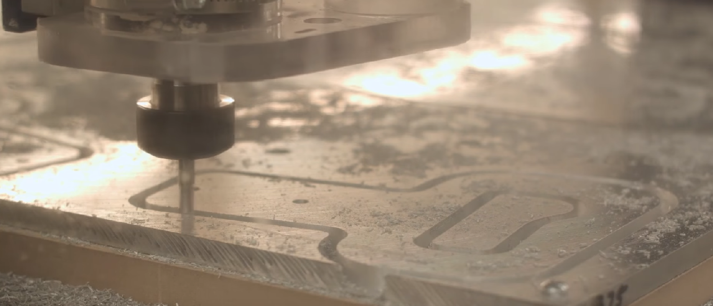
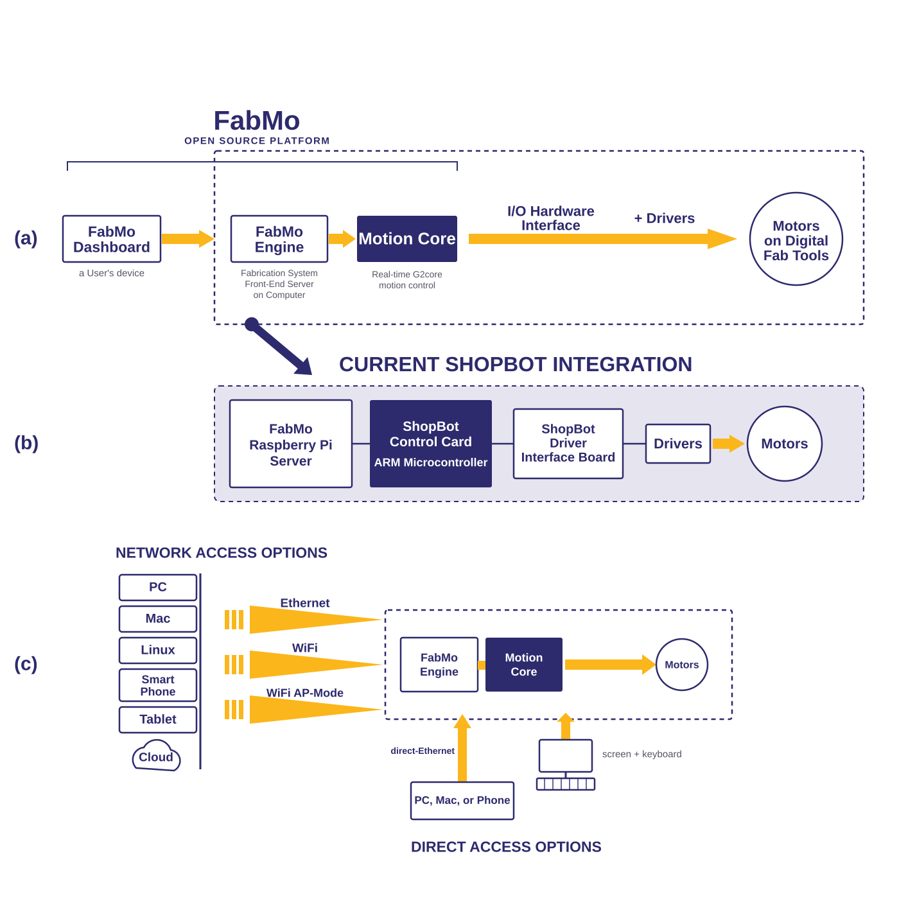
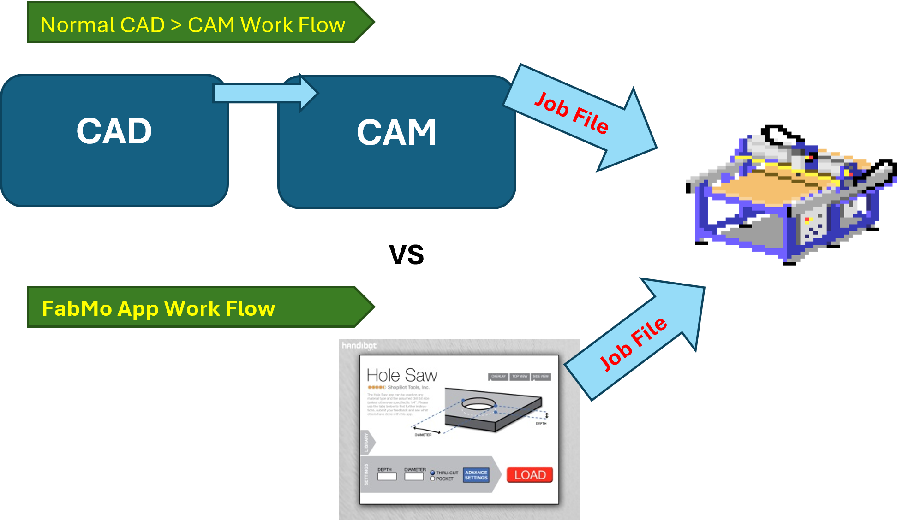
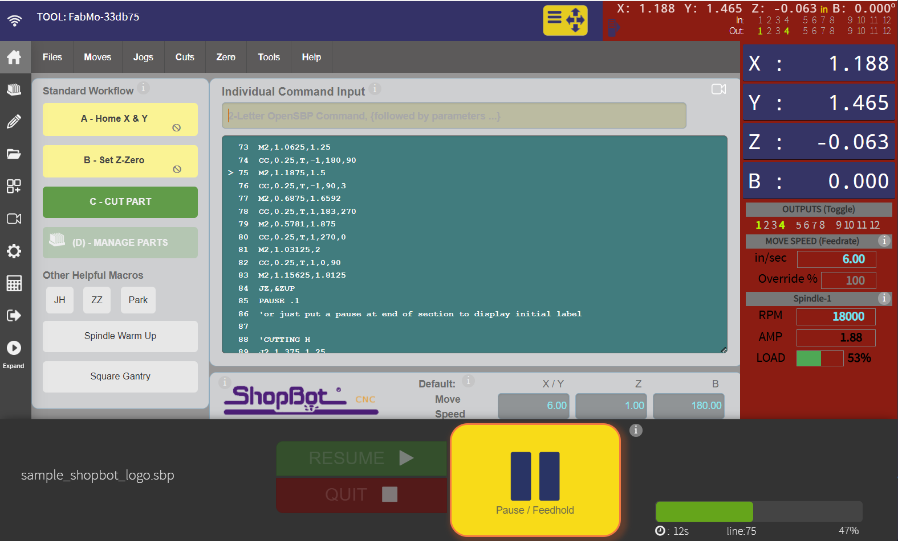
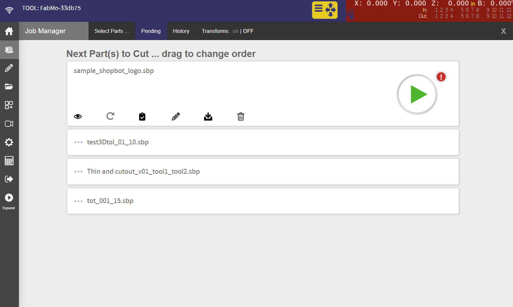
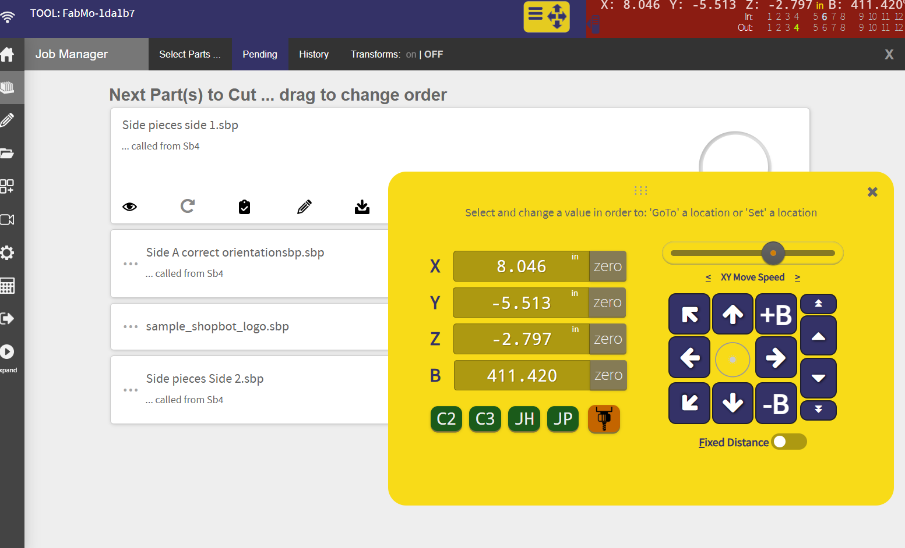
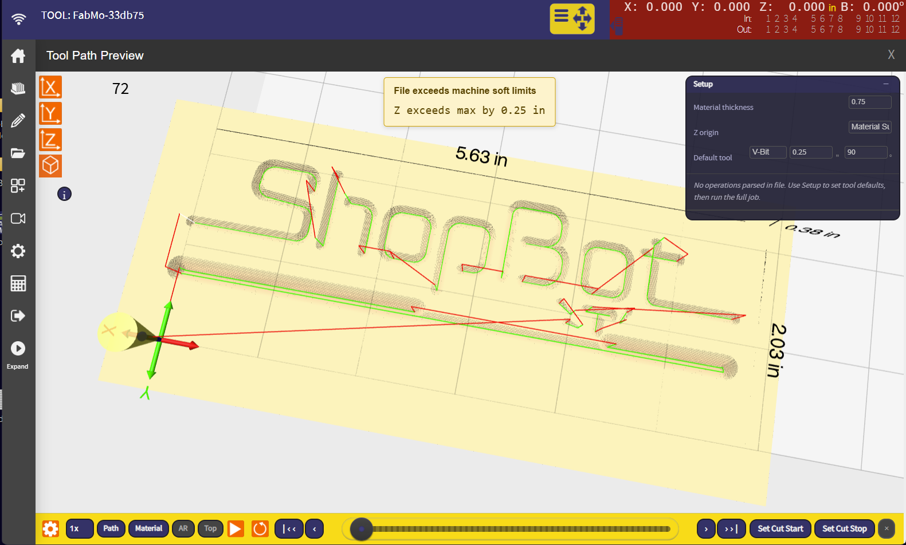
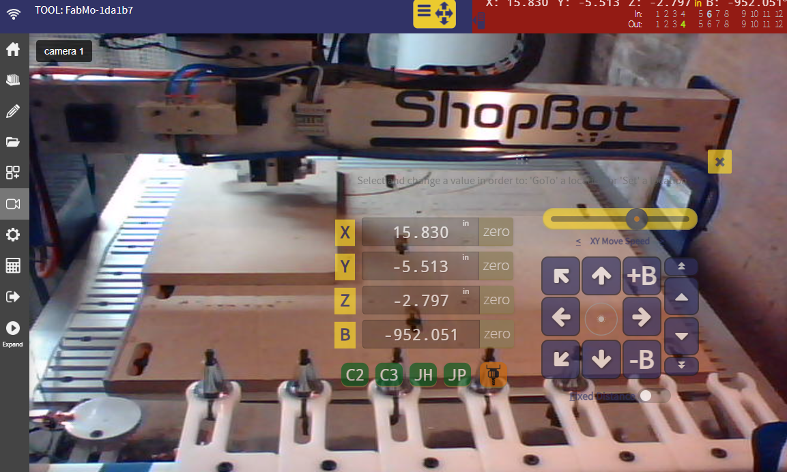
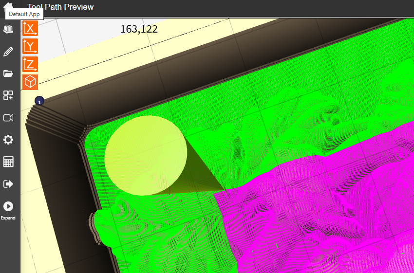
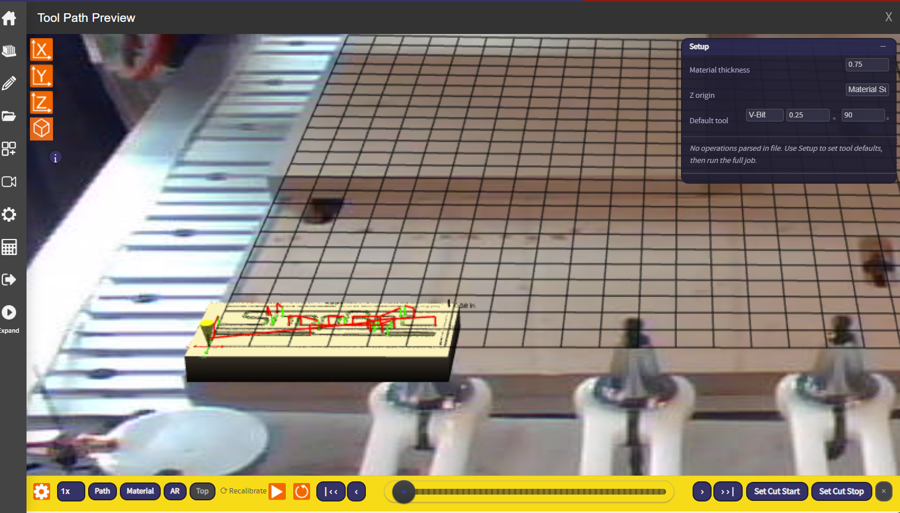

View on GitHubFabMo is a digital fabrication and motion platform of software and hardware. At its core is a powerful motion system that prioritizes smooth, snappy machining. Around that core, FabMo provides a straightforward, intuitive control interface and an application and API environment that supports extensive customization and production integration. FabMo was developed by ShopBot for all our own CNC equipment and as well as CNC equipment more broadly. Today it is ready to run ShopBots with a familiar, compelling, and enabling interface. FabMo was built from the bottom up with usability and adaptability in mind. It' ready to go to work on your tool.
Go FabMo: to create, produce, and manufacture precisely and efficiently, in adaptable ways that strengthen your production process.
We set out some years ago to build a new kind of software for running CNC and digital fabrication tools -- the computer-controlled machines that shape parts either by subtraction, cutting and machining components from blocks and sheets of material, or by addition, building items up from raw material. Years earlier, ShopBot had helped show that industrial automation could be made affordable by harnessing the then-new personal computer for control of affordable CNC routers. A new generation of microcontrollers now makes it possible to put even more capability, at lower cost, into the control of robotic equipment. We needed that capability for our own machines, so we developed it for ShopBot as well as for other CNC equipment ready to be enhanced.
Today's FabMo offers CNC users five fundamental capabilities:
The highest priority of any CNC tool is to machine well. Everything else FabMo offers is built on top of quality machining motion. FabMo's enhanced hardware and low-level motion core provide sophisticated, near-real-time motion-planning. Fifth-order, "S"-shaped acceleration profiles minimize "jerk" and produce confident, brisk moves, while high-resolution timing yields smooth surfaces and graceful fabrication action. Underlying smoothness is the inherent accuracy of digital motion with precise, error free positioning for hour after hour of operation.
FabMo opens new paths of access to your tool. Because it's built on standard networking, almost any smart device with a browser -- a phone, tablet, laptop, or desktop -- can run and monitor your FabMo equipment. Choose the access route that suits your shop: hard-wired for industrial robustness, or wireless for convenience. Where cybersecurity matters -- schools, government and military sites, secure corporate floors -- FabMo can also run completely disconnected from any network. You can attach a screen and keyboard directly to a FabMo tool and run the tool entirely off-line (isolated from any network or internet); if you need on-board CAD/CAM, connect a single PC to the tool by ethernet cable (also without a network if needed). If you have a secure network available, the long-standing frustration of limited or restrictive CNC connectivity and little interoperability is a thing of the past. FabMo provides access to your tool through virtually any connectable device -- it is your choice. FabMo fixes CNC access limitation while leaving the security decision entirely in your hands.
CNC tools are used across a wide range of environments by operators with very different skills and interests. The FabMo interface makes setting up your tool and running a job easy, with straightforward starting, monitoring, and file-management, plus built-in help and coaching for newer users. Operators already familiar with ShopBot will find a "classic" interface they recognize, alongside additional helpful tools and production resources built right into the platform. Develop job files on your tool-connected device, or post them from portable memory, your network, or -- if you choose to connect -- your cloud storage; you can always keep all work local for security. FabMo supports a wide range of workflows, from traditional CAD > CAM to a variety of "app" types (see below), and reads several motion languages including g-code and OpenSBP. While you are setting up work, FabMo's dynamic planning makes for near-real-time interactive control: positioning the tool from the keyboard, spinning up precise axis motion with a jog wheel, driving 2D or 3D positioning with a mouse, or even guiding simple machining by hand.
Adaptability is where FabMo most extends what a CNC tool is and can do. It's programmable in three escalating ways. First, ShopBot's OpenSBP toolpath language is more programmable than typical g-code: it's a conversational, BASIC-like language with variables, logic, and looping. So a great deal of customization can happen right inside the cutting files -- from a one-button move to a standard position, to production routines that move parts and people through a job. Second, a Macro library provides simple, quick functions for everyday production; many "canned cycles" ship ready to use, and users can add unlimited custom Macros of their own. Third, and most powerful, FabMo provides an API for "mini-apps" -- single-purpose programs written in the familiar languages of the web that run right on the platform. Apps can handle routine utility jobs or serve up complex, customer-customizable fabrication projects. To get you started there's an existing app library, worked examples showing how apps are built, and a prompt system for generating your own apps with AI. Together, these capabilities turn a fabrication tool into an open environment for new kinds of human-machine creativity and productive work.
FabMo was designed with the Industrial Internet of Things (IIoT) and Industry 4.0 in mind. Smart sensing and reporting can help optimize production tools for both productivity and quality. A wide range of inputs -- digital, analog, and video -- can flow into FabMo over multiple channels to track measures such as spindle performance and current draw, cutting vibration, positioning, and running times. This openness makes your FabMo tool ready to be hooked into monitoring to increasingly help operators manage tasks, tune performance, and anticipate maintenance.

Diagram of FabMo. (a) Outlines the general model of FabMo for digital fabrication equipment -- a user's client accesses the FabMo Engine server and Motion Core onboard the tool. These modules drive the digital fab tool's motors through an I/O interface and motor drivers. (b) Details of the components of ShopBot's integration of FabMo into the electronic hardware that powers our CNC tools. (c) Illustration of the breadth of network-access and direct-access options available to FabMo users.
FabMo is based on two hardware components: an SBC (single-board computer) that runs the "Engine": FabMo's interface, communications, and management systems; and, a microcontroller that provides a real-time environment for the motion functions.
The FabMo-Engine is a collection of software components and documented APIs.
At the lowest level, the FabMo motion system resides on the ARM microcontroller. Refined by ShopBot over years of production use, it is a sophisticated real-time motion core: high step rates; advanced "S"-shaped ramping for smooth, efficient acceleration and deceleration; and precise management of all timing and interaction with the tool.
The FabMo Engine server, running on the tool's SBC, provides access from the FabMo Dashboard on client devices -- PCs, smart phones, tablets, and the like, whether networked or directly linked. It handles low-level core functions and manages the flow of jobs to the real-time motion core.
Programmed primarily in JavaScript and Node.js, FabMo serves up a contemporary, mobile-friendly web interface. Several base modules provide run-times for different digital-fab toolpath languages. FabMo runs jobs and handles files -- and, importantly, it also provides a platform for developing and hosting "apps" that add a wide range of usability to digital fab tools. App Developer Resources include documented example apps that serve as templates for development. Apps are written in the languages of the web (HTML, CSS, JavaScript, and so on) -- so as app libraries grow, so do our tools for doing digital fabrication.

Standard work in digital fabrication is done by sending a file of instructions to a CNC tool. The file describes the motions the tool moves through to machine or build a part. Such files are variously called part files, toolpath files, CNC files, or cutting files; they are primarily a list of XYZ coordinates defining the path the tool follows, and they may also carry instructions for other functions such as changing speeds or switching outputs on and off. This is the type of file created in the normal CAD > CAM > CNC-tool workflow, which FabMo fully supports and enhances -- handling one or more files as a "Job," with sequencing, preview inspection, and validation in its Job Manager.
Beyond this traditional workflow, the FabMo platform offers a new approach to smart tools: "apps" that more directly use the capabilities of digital equipment. Apps can do a wide range of tasks and help produce more complex projects; for many users they become a real production workhorse. They can provide smart utilities for complex drilling and sawing, or replace the harder work of drawing in a CAD program and then tool-pathing in CAM. The point of an app is to make defining the machining easier and more natural. See some of the examples below.







These examples run here in your browser as illustration -- they are not the versions integrated into the FabMo Dashboard.
Check out the API documentation for the details on making use of FabMo functionality in your own apps.
And there is always the FabMo project itself on GitHub -- code, apps, and resources.